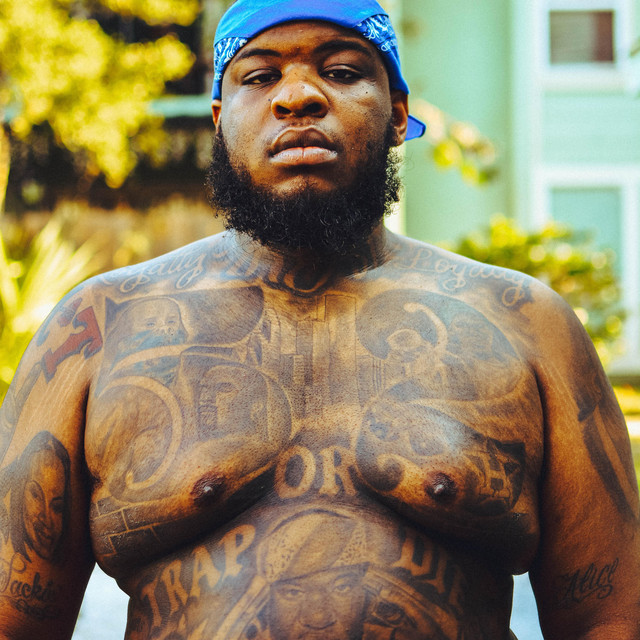
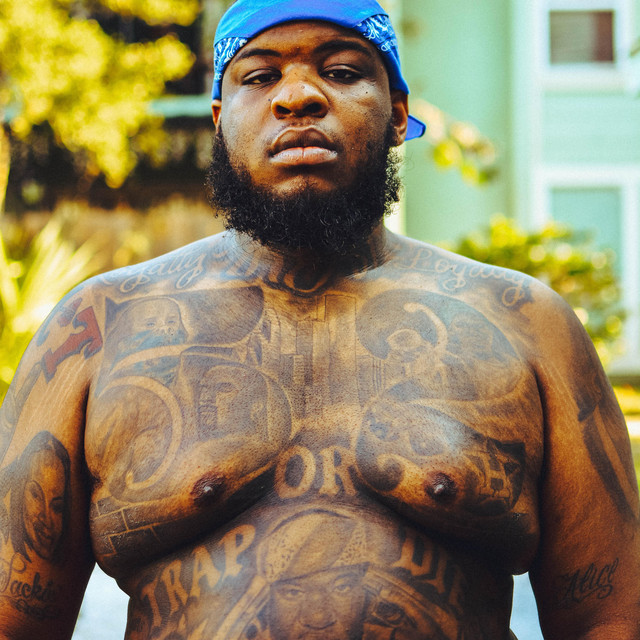
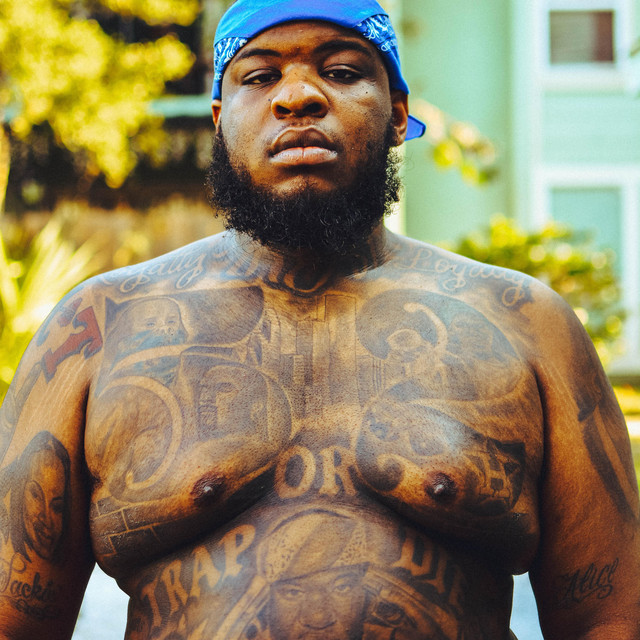

Maxo Kream is one of the newer artist that I have discoverd & tends to have meaningful lyrics.

Born Emekwane Ogugua Biosah Jr. in Southwest Houston, Maxo Kream is in many ways his father’s son. For one, he’s named after his dad, Emekwane Sr., who immigrated to the U.S.
from Nigeria, and started hustling in the streets when Maxo was a kid. The album title Brandon Banks comes from the alias his dad used. Driving the metaphor home, the cover art
features Maxo’s face stitched together with his father’s.Still, the music would eventually stick. He first came on the scene in 2011 with a flip of Kendrick Lamar’s Section .80 highlight, “Rigamortis.”
In the video, Maxo emerges with a commanding presence, making easy work of the beat’s high-velocity drum pattern. A forefather of Houston’s ascendant rap scene, Maxo’s been around long enough to have played a part in the rise of
a number of other rappers, whom he brought to the city and provided vital connections.

 
